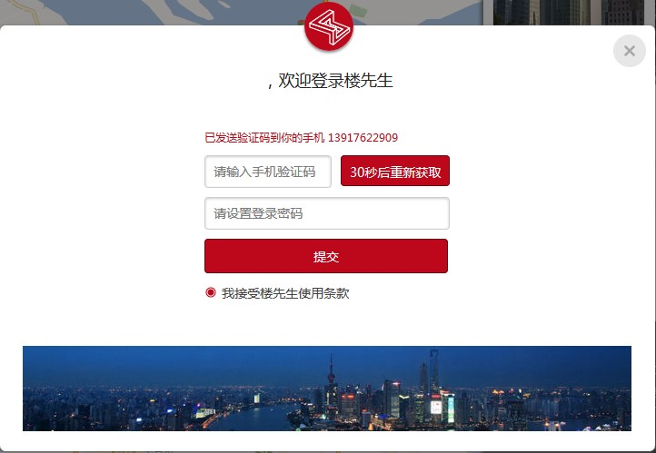

一、如何注册及登录楼先生
楼先生注册只需通过手机获取验证码即可注册，普通注册简单登录即可，如果是行业内人士，会有更多权限，需要填写对应的身份信息才可注册成功，后台会有客服人员电话沟通确认后予以认证权限。
首次注册楼先生以后，正常记录会记录信息，下次可直接登录；如果是通过网站注册登录，网站上会提示填写登录密码信息，下次可直接通过密码登录网站。
二、注册身份及完善信息
楼先生对于不同注册身份用户在页面查看的内容有所不同，所以请用户选择正确的身份注册，并填写完整信息，如果在使用过程中身份发生变化，可以个设置里面修改身份提交新的身份信息，后台审核通过以后即可以新的身份登录使用。
三、注册认证及显示功能
用户凡是提交了会员申请的用户都会获取楼先生的认证权限，认证以后首先部分个人设置数据无法自行修改，另外也将获得对应的认证权限（详细见易楼精英汇会员权限）